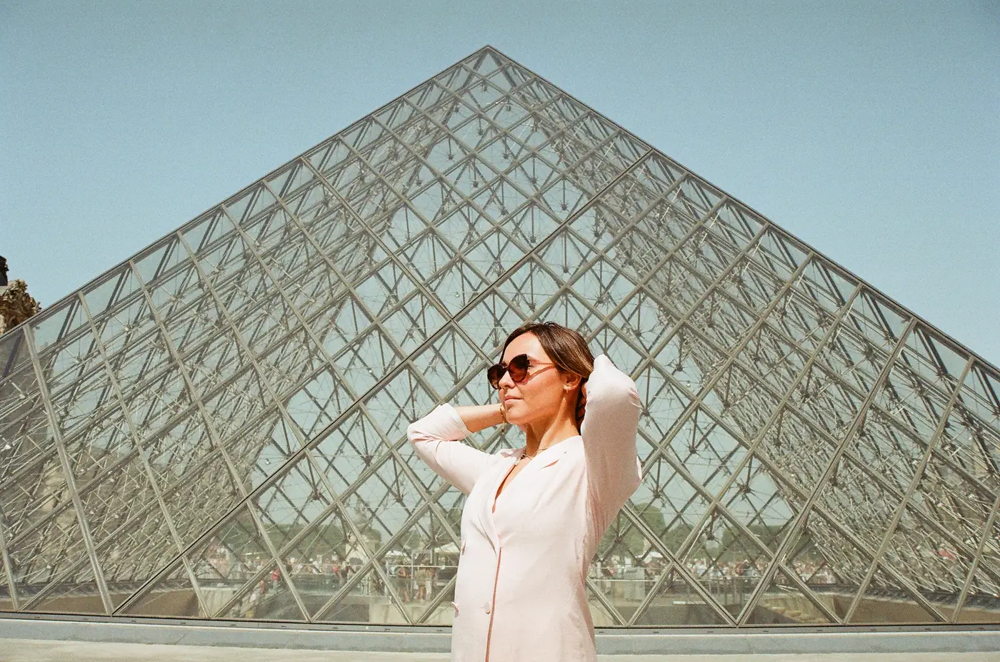

XAVIER YOU
PORTFOLIO
À fleur de nacre
Sous le rouge, à dessein
Isis à demi dévoilée
Le temps d’une pose
La nuit lui appartient
Pink Flow
La chambre des lianes
À PROPOS
CONTACT
À fleur de nacre
Sous le rouge, à dessein
Isis à demi dévoilée
Le temps d’une pose
La nuit lui appartient
Pink Flow
La chambre des lianes
À propos
Contact
Série 4 / 7
Le temps d’une pose
Paris, 2021

← Série précédente
Isis à demi dévoilée
Série suivante →
À fleur de nacre